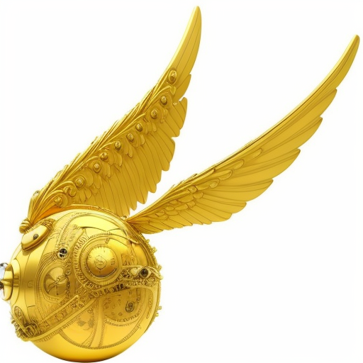

Hogwarts Express was established by the Ministry of Magic as the best way to deliver young wizards and their professors to the concealed Hogwarts School of Witchcraft and Wizardry.
The controversial idea of using muggles' invention was introduced by Ottaline Gambol. Comparing to the former approaches it is appeared to be more safe, comfortable, concealed from muggles' eyes and easy for the young wizards, especially for those whose parents are muggles.
Regardless the initial resistance from pure-blood families, Hogwarts Express satisfied all the requirements to solve the transportation problem. Before that Hogwarts students had to take a huge risk of being discovered by muggles, using their broomsticks (not to mention the dropping chests with school supplies) or injured, using Portkeys and Floo Network.
In 1830, the Ministry of Magic performed the biggest Concealment Charm ever performed in Britain, as well as one hundred and sixty-seven Memory Charms to acquire the locomotive. This operation also brought the Hogsmeade railway station.
In 1850s, the most proficient wizards in the Ministry created the platform 9 3/4 at King's Cross Station and therefore finished the project.
The Hogwarts Express carries hundreds of students, providing the best experience to start each school year with friends, treats and waiting for the new adventure to start.
Hogwarts Express is more than just a means of transportation. It has become a symbol of unity and friendship, as it is during this train journey that young Hogwarts students make new friends and plan their future adventures. The carriages are filled with laughter, whispers, and anticipation of what awaits them at school. It is a place where magic comes to life, and dreams become reality.

This train is a source of nostalgia and magic that was an integral part of my education at Hogwarts. Every time I step foot onto the carriage of the Hogwarts Express, I feel genuine joy and anticipation of new adventures. I cannot fail to mention the breathtaking landscapes that can be seen outside the windows of the Hogwarts Express. The green meadows, enchanting forests, and distant mountains create an unparalleled scene that fills me with delight and reminds me that I am a true part of the magical world.

The Hogwarts Express is a symbol of the past, reminding me of the times when I was young and proud as a student of Hogwarts. The journey on this train was always exhilarating and, at the same time, stimulating, as it promised new encounters, lessons, and experiences. However, despite these positive aspects, the Hogwarts Express also reminds me of the challenges and divisions I experienced during that time. Being a significant part of the wizarding world, the train always reminded me of my family legacy and the expectations that hung over me.

Hogwarts Express is not just a place of memories; it is a place of hope. It embodies the connection between the past and the future, allowing me to relive the magic and reconnect with my roots. Now, I look upon the Hogwarts Express with gratitude and serenity. This train will always remind me of my journey, the obstacles overcome, and the importance of staying true to myself and my values.
The Hogwarts Express also embodies my childhood memories. The sounds of the rumbling wheels, the whistle of the steam engine, and the scent of fresh air evoke emotions and open the door to the past. Here, I feel the innocence and spontaneity that are inherent to childhood. But most importantly, the Hogwarts Express symbolizes friendship and solidarity. The carriages are filled with laughter, conversations, and anticipation. It is where I learned the value of support and mutual assistance, which undoubtedly helped us overcome all obstacles on our journey. It is not just a mode of transportation; it is a magical journey that will always remain in my heart. I am grateful to this train for the unforgettable moments and for the opportunity to be part of the wonderful world of magic and friendship.
|
USER COMMENTS |
|
|---|---|
AragogUser |
I prefer flying motorcycles, because when I grew up, I became to big for the train seats. But I remember my travel to Hogwarts. It was very exciting. And also this transport is pet friendly, which is very important to me. |

Oliver WoodGuest |
Best memories! Being the captain of Quidditch Gryffindor team, I've spent a lot of time, discussing game strategy and having a good time with my best friends. |
Guest311226Guest |
What a shame to use this messy muggle's transport. Why they just don't let us to apparate?? What's next? Cast our spells with a TV remote?? >_< |

Cho ChangUser |
quote: What a shame to use this messy muggle's transport. Why they just don't let us to apparate?? What's next? Cast our spells with a TV remote?? >_< LOL! Everyone knows it's you Lucius. Don't be ridiculous. And stop muggle shaming, they have the right to live their life. |
The place where you can buy any book or even meet the writer.
An independent source of magical news, rumors and sensations.
The sweetest place in Hogsmeade or even in the whole world.
Prankster's paradise of Hogsmeade - magical jokes for every taste
The most secure place for your savings and secrets in the world.
Outstanding antique shop of unusual and unique magical artefacts.